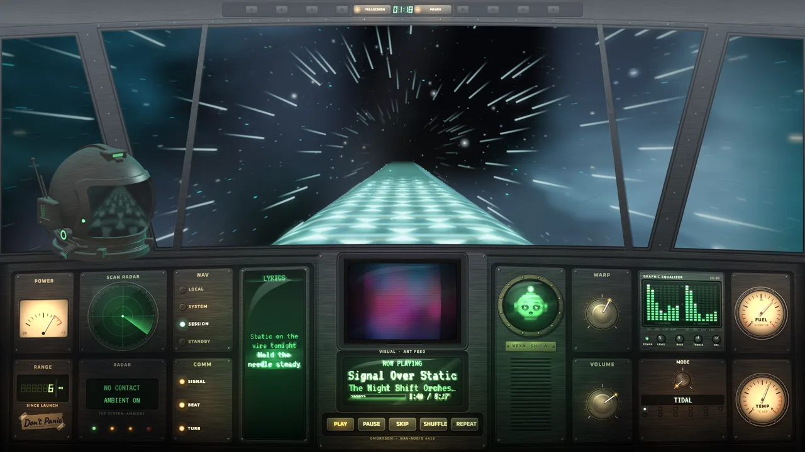
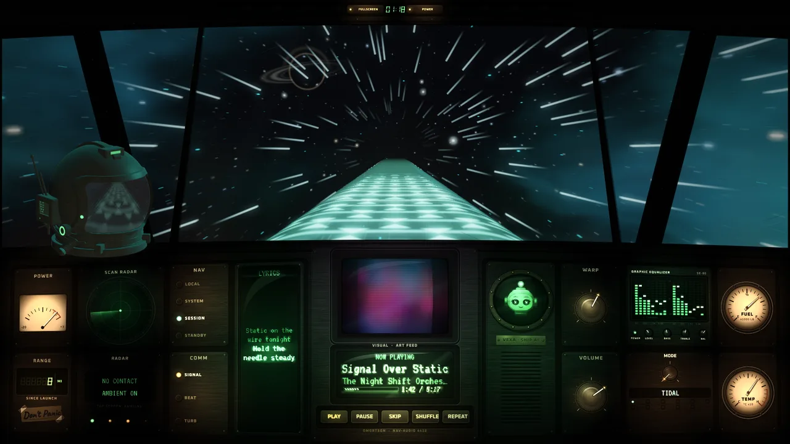
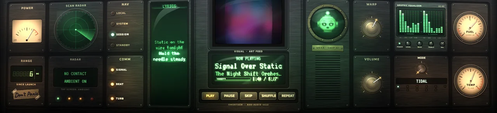
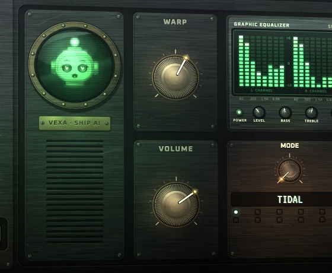

StarTrip
A fullscreen music player seen from the cockpit of an old analog spaceship. You cruise down a glowing crystal road through deep space while the dashboard's gauges, CRT screens, lamps and radar react to your music.




Features
- Fullscreen cockpit view with a raymarched crystal road, starfield, nebulae, light trails and beat ripples
- Random space events: shooting stars, comets, planets, UFOs and a lensing black hole
- Live analog dashboard: VU meter, gauges, radar, graphic EQ, RANGE odometer and a clock
- Vexa, the ship AI, lives in a porthole CRT and sings along to synced lyrics
- Plays local files and reacts to what's playing in other apps (e.g. browser music via Windows media controls)
- Synced lyrics from tags,
.lrcfiles or lrclib.net - Keys: F6 space event, F7 screensaver, F8 warp jump, F11 fullscreen, Esc quit
System requirements
- Windows 10 or 11 (64-bit)
- A GPU with OpenGL 3.3; a desktop with audio output
- About 200 MB of free disk space
Install
- Download the latest
.zipfrom the Releases page. - Right-click it, choose Extract All, and pick a folder.
- Open the folder and run
StarTrip.exe. - If Windows SmartScreen appears, click More info then Run anyway.
Notes: builds are not code-signed yet, so Windows may warn you the first time. To uninstall, just delete the folder. Press Esc to quit.